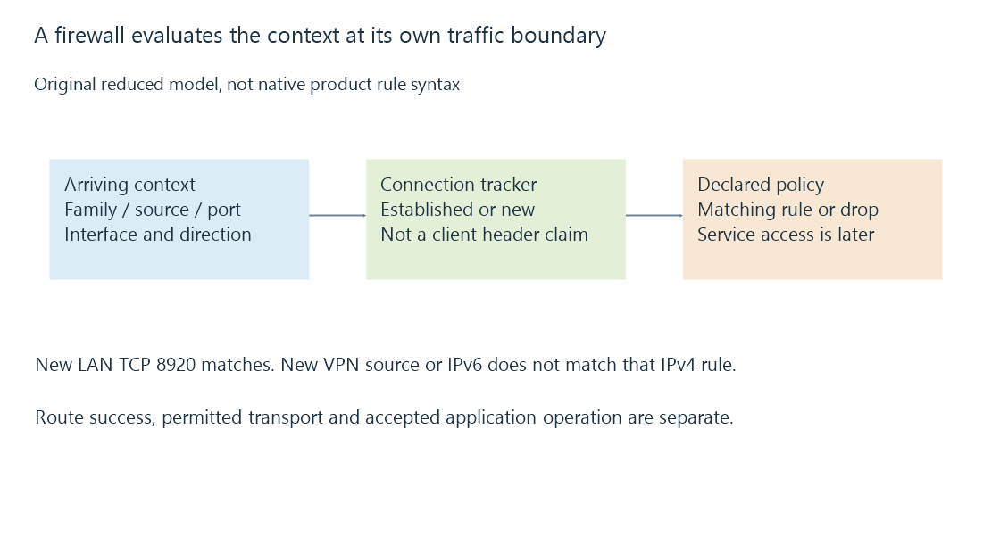

Firewalls, traffic rules and connection state
A firewall applies traffic policy to packet and connection context, with addresses, ports, interfaces, direction and tracked state contributing to different reachability outcomes.
A firewall decides which traffic its policy permits. The decision can depend on protocol, addresses, ports, direction, interface, application context and previously tracked connection state.
It can allow one Emby path while blocking another to the same machine.
Start with the packet context that reaches this boundary
An outside packet can have its destination rewritten by a router before the host firewall sees it. A VPN or proxy can change its source representation as well.
The rule therefore needs to match the context at the boundary where it is enforced, not only the endpoint originally entered into the app.
A host listening on 8920 and a gateway mapping to 8920 are not evidence that the host’s inbound policy permits the arriving source.

A reduced stateful policy
Use this original first-match teaching model:
{
"rules": [
{"trackedState": "established", "action": "allow"},
{"family": "ipv4", "transport": "tcp", "sourcePrefix": "192.168.50.0/24",
"destinationPort": 8920, "inputInterface": "lan", "action": "allow"}
],
"otherwise": "drop"
}
These are not executable firewall rules. The tracked state is supplied by the model’s connection tracker, not accepted from a client-written header.
For a new TCP connection from 192.168.50.30 arriving on lan for port 8920, the second rule matches. A new connection from 10.8.0.6 does not match the source prefix, even if a VPN route delivers it successfully.
A new IPv6 connection also does not match this explicit IPv4 rule. It needs its own applicable policy or another rule in a real implementation.
Established return traffic has another relationship
A stateful tracker can associate later traffic with an already permitted flow. The policy can then handle appropriate return packets without describing every automatically selected client-side port as a permanent inbound service.
A completely new request for another service is different. An equal source address or a claim inside an HTTP header does not make it part of an established flow.
A gateway restart or expired state can also change how later packets are classified.
Stateless packet filters operate with another rule context. The existence of stateful behavior in one device should not be generalized to every boundary.
Profiles and interfaces can change which rules apply
Windows Firewall has network profiles and application/rule context. Other systems can attach rules to interfaces, zones or chains with their own precedence.
A server can therefore behave differently through Ethernet, Wi-Fi, a VPN interface or another address family while the application itself is unchanged.
| Two observed paths | Possible policy distinction to retain |
|---|---|
| Loopback versus another device | Local stack versus network ingress |
| LAN versus VPN source | Source range and input interface |
| IPv4 versus IPv6 | Address family and separate applicable rules |
| Direct client versus reverse proxy | Observed socket peer and trusted metadata context |
This table identifies inputs, not a claim that any one product uses the simple model’s first-match ordering.
A rejected connection does not identify every earlier stage
DNS can return the right address and routing can deliver the packet before the firewall drops it. A different case can fail before any packet reaches that firewall.
A refused TCP connection can instead come from an endpoint with no suitable listener or an explicit rejection. A timeout can have several causes, including silent filtering and missing return traffic.
The observation’s location matters. Emby’s connectivity documentation describes the host-firewall stage without treating a disabled firewall as a necessary diagnostic step.
Application access comes after permitted transport
The firewall can permit the TCP service while Emby rejects a user or requested operation. Those results are not contradictory.
Forwarded client addresses explains why trusted proxy metadata must also be interpreted at the right layer. A network-policy decision and an application’s reported client identity should not be collapsed into one unqualified “allowed address.”
See Also
- Network ports, listeners and connection endpoints
- Port forwarding and the complete inbound path
- IPv6 addressing, scope and reachability
- Forwarded client addresses and trusted proxy context